Cozy ASCII scenes that react to your agent while it works.
Your agent goes off to think for a few minutes at a time. Sit back and watch it work. The tide rises as it gets busy and settles when it stops. A crablet arrives for each subagent it sends, and walks back into the water when that one reports back. The moon thins and sinks as the context window fills. The last few files it touched are written in the sand, and the water takes them as they get old.
It runs in the same window as the agent, just under its output. Nothing to open, nothing to read. Glance at it the way you would glance out a window, and you know how the work is going.
- A glance is enough. How hard it is working, what it is doing right now, whether something broke, whether it is waiting on you. Nothing to read.
- Two knocks you can tell apart from across the room. A solid balloon and a chime when it needs you, a dotted one and a low note when it is done. Silent while it works.
- Any agent, any terminal. It hosts whatever you run. Claude Code arrives already wired; anything that can run one command can drive the scene. It draws in the 256 colours every terminal agrees on, so the picture is the same wherever you work.
- One fact, one place. Activity, subagents, finished todos, context left: each owns its own part of the scene. On the shore those are the swells, the crablets, the stars and the moon.
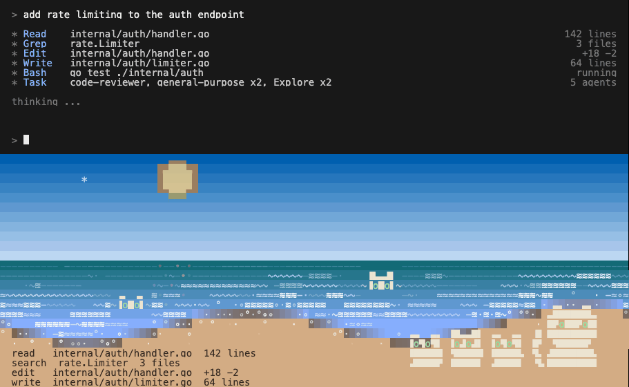
One whole session, start to finish, in your own window. The agent works in the top rows exactly as it always has. Underneath, the sea comes up with the work and settles when it stops, subagents arrive as crablets and walk into the water when they report back, stars light as the plan gets done, the moon wanes and sinks as the context window fills, and the companion knocks when it needs you. Then the context is compacted, the list starts over, and it begins again. The day turns the whole time. Every clip on this page is the real renderer folding the events a Claude Code session emits. Nothing is posed.
xscapes install claude --apply # Claude Code: writes its hooks after a backup, uninstall puts them back
xscapes claude # the agent in the top of the window, the scape underneath
xscapes inside <any command> # anything else: host it the same way
It runs on your clock
The scape keeps the time of day where you are. There is no theme setting and no dark mode switch: the sky goes dark because it is dark outside, the sun crosses it, and the light on the water follows. You look up from your work and the landscape has moved on with the afternoon, the way one outside the window would.
Below is one session at four hours.

Afternoon. A command exited 1. The companion carries it, pulled in small with its claws down, until you come back. The weather never does.

Dusk. The agent needs permission. A solid balloon, the alert pose, and a chime.

Night. Done, every todo lit. A dotted balloon and a low note. The moon has waned and sunk with the context, and the number under it says what is left.

Dawn, half a minute later. Flat sea, the writing receding, the companion still.
How to read it
Every question you would normally interrupt yourself to answer has one place in the scene, and no two share a place. Nothing here is a number you have to read. Each clip below is the real scape, cropped to the one part that carries that fact, most useful first.
It needs you
A solid balloon over the companion, in a warm colour, with a bright chime. It says what is being asked, and the companion puts a claw up toward the agent's own output.
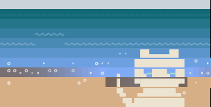
It finished
A dotted balloon in a cool colour and a low note. Both claws go up and the eyes change, and it holds the pose so you see it when you get back.
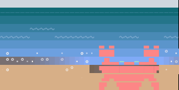
Something broke
The companion goes worried: claws down, stalks short, amber eyes. The widest thing on the beach becomes the smallest. It stays that way until the trouble clears, so a failure you missed is still on screen ten minutes later.
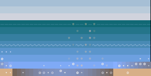
How hard it is working
The sea. How many swells are travelling and how tall, with whitecaps once it is going flat out. Flat water means it is waiting on you.
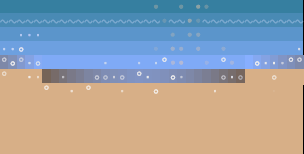
What it is doing right now
Writing in the sand: the tool and the file, newest and brightest at the waterline, older lines fading as the tide takes them.
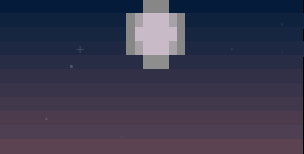
How much context is left
The sun by day and the moon by night. It wanes and sinks toward the horizon as the window fills, and from 40% used it carries the number underneath.
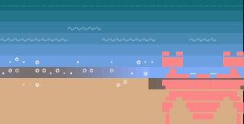
How many subagents are out
Crablets, one each. Some sit on the sand, some are already in the shallows, and each walks into the water when its agent reports back. A crab does not swim: the eyestalks carry on above the surface until it is gone.
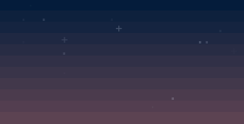
How much of the plan is done
Stars in the upper sky, one lit per finished item on the agent's list. They come out as the evening does.
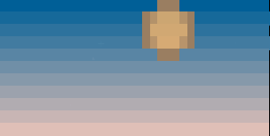
What time it is
The sky, on your actual clock. Nothing about it is the agent, which is what makes the rest of the scene unambiguous.
One rule holds it together: the water is the work, the sky is the world. Anything moving on the sea is your agent. Anything in the light and the sky is the day going by.
Choose your xscape
The shoreline is what runs today, and two animals live on it: Hero the crab, who ships as the default, and the cat who came first. xscapes companion cat switches, and a scape already running picks it up on its next frame. A landscape only needs six things to carry the whole system: a light, a sky, something that moves with the work, a surface, somewhere the work piles up, and someone living in it. So there is no reason to stop at one. More scapes are on the way, each with a companion that belongs in it, and you pick the one you want to work next to.
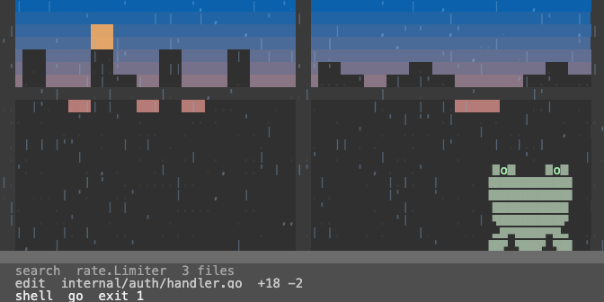
The rainy window, with a frog. Rain on the glass carries the work and comes down harder the busier your agent gets. The city behind it carries the hour. The frog keeps the sill, and its young swim.
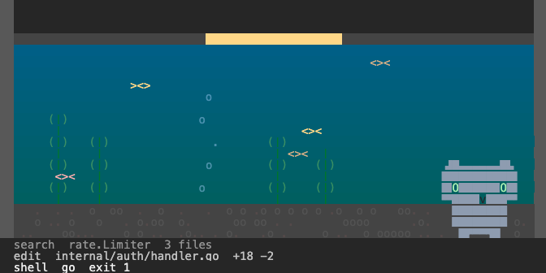
The aquarium, with an owl. More fish come out as the work picks up, the tank's lamp is the light, and the gravel is where the day's work settles. The owl sits very still and blinks, which is most of what an owl does anyway.
Underneath, a protocol
The scene is the top half of xscapes. The bottom half is a small event protocol, and that is the part that works with anything.
Fifteen events over a socket. Claude Code sends them through its hooks the moment you install. For anything else, one line in a script is a complete adapter: xscapes emit needs_input -text "allow Bash?". Tool events do not each get their own weather, they all feed one activity level, so a new tool needs no new vocabulary.
One Go binary, standard library only. It runs on the alternate screen and hosts your agent inside it, so your transcript is untouched and scrolls the way it always did. Drag the window and the shoreline reflows live, because each terminal moves your content differently and each one gets its own handling.
It stays for the session
You start it once and it runs until you are done. Tasks move the scene and the day passes over it. Every repository gets its own shoreline, the same one every time, shaped from the repo itself, and your companion comes with you to all of them. It has been running here daily since the start of September.
Built for the Commons "Make Waiting for AI Fun" hackathon, September 2026. Go, standard library only. MIT. Source and issues at github.com/donlucasx/xscapes.